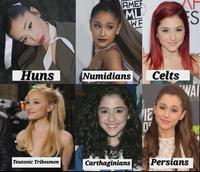
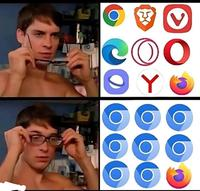
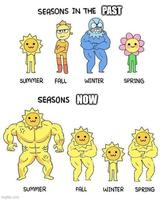

0
Students are using AI-powered smart glasses to cheat on tests, reports CNN. "And in East Asia's test-obsessed societies, where a single exam could impact the trajectory of a student's future career and social status, educators are scrambling to get ahead of the problem."
Already, countries are stepping up inspections for test-takers. For China's grueling annual college entrance exam earlier this month — which more than 10 million hopefuls take each year — authorities required screening of all glasses. In the United Kingdom, the head of England's exam watchdog warned earlier this month that AI glasses and smart devices like earpieces could worsen cheating in exams... [T]wo incidents in South Korea were the country's first reported cases of cheating with AI glasses... In Taiwan, the university where a prospective student was caught cheating is now reviewing rules and standard operating procedures for AI eyewears during examinations.
But experts worry these individual cases point to a more widespread issue. "If we're seeing a few cases being reported, we're seeing a lot more cases not being reported," said Thomas Corbin, lecturer at Deakin University in Australia, who has conducted research around the usage of AI-powered glasses and other smart devices in academic assessment. With the rapid development of AI technology, however, smart glasses are becoming slimmer, less noticeable, while integrating AI models that can operate independently with connectivity, raising concerns not only about exam integrity, but also about broader privacy risks... "Wearable AI is as much of a challenge to exams as ChatGPT was to essays in 2022 and I just don't think there is any real way that we can reliably have exam practices moving forward," Corbin said.
Read more of this story at Slashdot.
Max Planck won 1918's Nobel Prize for physics. Yet two of his papers were retracted — a move now being criticized by Yves Gingras, a historian of physics at the University of Quebec and Mahdi Khelfaoui, a fellow historian of science at UQ Trois-Rivières. Science reports:
The papers, both quietly retracted in 2011, originally appeared in the early 1940s in Naturwissenschaften, a German journal now owned by publishing giant Springer Nature. After some sleuthing, Khelfaoui determined one of the Planck pieces, a philosophical essay from 1942 titled "Sinn und Grenzen der exakten Wissenschaft" ("Meaning and Limits of Exact Science"), about how to achieve certainty in scientific knowledge, had also appeared in two other journals and been reprinted twice in books. Repackaging the same work multiple times is considered "self-plagiarism" and frowned upon today — the practice produces copyright conflicts and inflates scholars' publication records. The Naturwissenschaften site gives "copyright violation" as the reason for the retraction.
Yet publishing identical material in multiple journals was widespread before the internet. "Science was more fragmented" then, Khelfaoui says. "You wanted different audiences ... to have access to your work." The practice was especially common for luminaries like Planck. Albert Einstein did the same (but escaped retractions). Springer Nature's "anachronistic" application of modern standards to a 1942 paper "distort[s] the historical record," Gingras and Khelfaoui argue in a preprint posted last month on arXiv. Any concerns about copyright violations are largely moot anyway: Because Planck died in 1947, his works are in the public domain in most countries.
Gingras was especially incensed that Springer Nature deviated from the normal practice of merely slapping the word RETRACTED across the digital version of the paper while still allowing scholars to read the text. Instead, the publisher posted a blank white page with the cryptic phrase, "This article has been withdrawn due to article violation." Springer Nature is nevertheless still selling the empty PDF for $39.95. Suzanne Scarlata, a chemist and biochemist at the Worcester Polytechnic Institute and editor-in-chief of The Science of Nature, as Naturwissenschaften is now known, had not heard about the retractions before being contacted for this story... Scarlata suspects Springer Nature's internal policing software removed the paper and posted the retraction notice unilaterally, without human supervision: "I think it just happened with their algorithm," she says. "It's a mistake they should probably rectify."
A second Planck paper was apparently removed because its response to a 1940 paper had used an identical title.
Thanks to our long-time Slashdot reader He Who Has No Name for sharing the article.
Read more of this story at Slashdot.
SpaceX plans to begin building an eight-mile natural gas pipeline called "Starpipe" next month to supply its Starbase launch site with fuel for a much higher cadence of Starship launches. The pipeline is expected to enter service in January 2027. Reuters reports: The pipeline plan, previously reported by Rio Grande Valley Business Journal, signals Musk's intent to accelerate Starship's development and lay the groundwork for a faster flight rate. The 40-story rocket is central to SpaceX's push to expand its Starlink broadband network, deploy orbital AI data center satellites, and eventually carry astronauts to the moon and Mars.
Designed to be fully reusable, Starship uses about 630,000 gallons (2.4 million liters) of liquid methane per launch, currently delivered by hundreds of tanker trucks in an hours-long process incompatible with Musk's expansion plans. Starship has completed 12 test launches since 2023, but Musk aims to ramp up to dozens, hundreds and eventually thousands of launches a year.
Though it is unusual for a space company to build its own natural gas pipeline for launchpad fuel, Starpipe might only be an initial step in a longer-term plan for SpaceX, which has spent years exploring its own drilling operations near Starbase and throughout Texas, according to a Reuters review of Cameron County land records. SpaceX President Gwynne Shotwell told CNBC on June 12, when the company went public, that the company planned to build pipelines and process its own propellant, and was looking into drilling its own natural gas.
Read more of this story at Slashdot.
Jack Nekhala had a business selling on Amazon — and in December he received an unusual offer, reports Bloomberg. A woman said she could bribe an Amazon employee "to help him retrieve $90,000 in funds that the e-commerce giant had frozen after suspending him over an alleged violation of review policy."
Hoping to ingratiate himself with the company and restart his business, Nekhala offered to provide evidence, including recorded conversations and screen shots, that he said proved Amazon personnel were peddling inside information and influence. The smoking gun, Nekhala told the representative: information about his seller account. Only certain Amazon employees are supposed to have access to such details, but Nekhala had received them from the woman on WeChat, the Chinese messaging app. Nekhala's experience, which he documented and shared with Bloomberg, provides a rare glimpse into an international black market that has been a persistent scourge of Amazon's online store. On one side are sellers looking for a variety of favors: a competitive edge over their rivals, information on how to boost sales, a way to get themselves unsuspended. On the other are middlemen who lurk on message apps like Telegram, WeChat and WhatsApp offering access to people inside Amazon who can get things done for a price...
It's impossible to determine the scope of the illicit activity, but it's an open secret among Amazon sellers and consultants, who are frequently approached on social-media platforms and messaging apps. "The message is always the same: 'I'm going to show you screenshots to prove I have inside access,'" said Chris McCabe, a former Amazon employee who runs a seller consulting firm... In 2020, federal prosecutors exposed an international bribery scheme involving Amazon sellers and employees. The ring allegedly extracted about $100 million in unfair advantages by bribing Amazon employees in Asia to help them sell more products and sabotage their competitors. Five people in the US were convicted and received jail terms or probation. Last year, law enforcement officials in India began investigating more than 20 former Amazon employees suspected of accepting bribes from trucking companies in exchange for routes, according to The Times of India.
After Nekhala reported his own experience to Amazon, the representative committed to "do some digging" and to email him instructions on how his evidence could be shared, according to a recording of the conversation. But Nekhala said he never heard back. The employee who leaked his personal information had already been fired for unrelated misconduct, according to Amazon.
Amazon told Bloomberg employee involvement was "very rare," and that "We invest heavily in this area and have dedicated teams and systems in place to prevent all types of fraud, including by our own employees."
Read more of this story at Slashdot.
IBM spent a decade "building, testing and improving" quantum computing, reports the Wall Street Journal.
"This year, the company is laying the groundwork to turn that technology into a fully-fledged, scalable business from an expensive science project."
IBM said last month it plans to form a new independent subsidiary called Anderon, a foundry to produce the silicon wafers needed to make quantum-computing processors. The venture is seeded by a $1 billion investment from the Trump administration and another $1 billion of IBM's own cash.
Anderon will give the company a new line of business in selling wafers to other quantum-computing companies. It will also provide a steady stream of wafers to continue developing its own quantum technology, positioning IBM to capture part of what the Boston Consulting Group projects will be a $90 billion to $170 billion market for quantum-computing providers by 2040...
The company also plans to spend an additional $9 billion over five years to advance the final stages of its quest to build a quantum-mechanics-powered computer capable and reliable enough for widespread use, a goal known as fault tolerance. That computer, named Starling, is being targeted for 2029. With Anderon, IBM is thinking beyond Starling, or even a more powerful quantum computer planned for 2033.
Read more of this story at Slashdot.
America generated 10.06% more energy with renewables in the first four months of 2026 than it did in the same period the year before. That's according to new figures from America's Energy Information Administration, cited in this report from Electrek:
The growth was led by utility-scale solar (+21.3%), hydropower (+15.7%), small-scale solar
In April alone, wind and solar each produced more electricity than US coal plants, while the combination of solar and wind produced 57.0% more electricity than nuclear power.
The mix of all renewables, including biomass and geothermal, accounted for 30.0% of total US electrical generation during the first third of 2026 — up from 27.8% a year earlier... EIA reported that, in April, utility-scale solar capacity surpassed wind capacity for the first time (160,208.1 MW vs. 160,100.6 MW). Further, utility-scale battery energy storage capacity increased by 17,703.5 MW, or 58.1%. Nuclear added just 18.4 MW.
The combined capacity growth of all utility-scale renewable energy sources for the 12-month period (55,980.3 MW) is two-thirds more (i.e., 67.6%) than that added during the previous 12 months (33,392.0 MW).
"EIA projects no new nuclear generating capacity and a net decline of 5,200.5 MW in fossil fuel capacity."
Read more of this story at Slashdot.
Slashdot reader BrianFagioli writes: Florida International University researchers have developed a technique called JaiLIP (Jailbreaking with Loss-guided Image Perturbation) that uses subtle image modifications to bypass AI safety guardrails. Unlike traditional jailbreaks that rely on carefully crafted prompts, the attack works through images that appear normal to human viewers. The researchers tested the technique against BLIP-2, a multimodal AI model, and found that manipulated images significantly increased the likelihood of harmful responses. According to the study, the approach outperformed previous image-based jailbreak methods and nearly doubled the number of unsafe outputs generated during testing. The findings highlight a potential security risk for businesses deploying AI systems that process both images and text. While most discussions about AI safety focus on prompts, the research suggests that seemingly harmless images may also serve as an attack vector.
Read more of this story at Slashdot.
There's a deadly, record-breaking heat wave spreading east across Europe, reports the Washington Post — and it's even worse than a dire earlier forecast:
The forecast was recorded in 2014 as part of a campaign coordinated by the World Meteorological Organization (WMO) that invited about 60 presenters worldwide to imagine a weather report from the year 2050. In one clip, Ãvelyne Dhéliat from French television network TF1 presented a hypothetical scenario of high temperatures 36 years into the future — during a heat wave in a warmer climate in 2050... One of the maps that Dhéliat shared was lit up in shades of orange, filled with temperature predictions of 40 degrees Celsius (104 degrees Fahrenheit), reaching as high as 43 degrees Celsius (109.4 degrees Fahrenheit).
But it turns out, it didn't take 36 years for those imagined temperatures to be reached — and even exceeded. The heat on Wednesday alone, when the temperature soared as high as 112.3 degrees Fahrenheit (44.3 degrees Celsius), exceeded the 2050 projections in 19 out of 34 locations across mainland France — far sooner than some may have expected. Some places surpassed those hypothetical future temperatures by more than 20 degrees Fahrenheit. It's part of a dramatic shift in heat wave frequency across the country. Half of the heat waves observed since 1947 have occurred since 2010. "By 2100, heat waves could last up to two months continuously," the country's weather agency, Météo-France, said this week.
It was hotter in France on Wednesday than in Las Vegas and Phoenix and just two degrees Fahrenheit shy of what was observed in Death Valley, California. An estimated less than one percent of the planet was hotter than France's hottest place... [T]he heat dome, which will linger into early next week, is only part of the story. This type of extreme heat is becoming more common as the planet warms, especially in Europe.
Climate scientist Robert Rohde said in a post explaining the heat wave's causes that France and Western Europe should expect many more heat waves like this over the coming decades. "This isn't a fluke, but simply part of the new normal," he said.
Thanks to Slashdot reader fjo3 for sharing the news.
Read more of this story at Slashdot.
When Mt. Vesuvius erupted in 79 A.D., it buried hundreds of papyrus
scrolls. They were rediscovered in the mid-1700s, remembers Smithsonian magazine, "the only
surviving collection of its kind from the Greco-Roman
world..."
"But when scholars tried to unroll them, the carbonized manuscripts
crumbled to dust."
Every generation that followed faced the same dilemma: They could wait for
technology to advance, abandoning hope of reading the ancient texts
in their own lifetime. Or they could try to open the scrolls
themselves — and risk destroying them.
In recent years, researchers have settled on a third option. Using
advanced imaging and artificial intelligence, they're deciphering
the scrolls without needing to unroll them at all.
The Vesuvius Challenge
has accelerated the process by turning it into a public competition,
complete with cash prizes. In 2023, a student won $40,000 for
deciphering a
single word — "purple" — from an unopened scroll. Later,
contestants would identify 2,000 Greek characters from one scroll ($700,000) and the title of another ($60,000). Now, for the very first time,
researchers have recovered all
surviving text from a single scroll. The nearly five-foot-long
segment includes roughly 20 columns of ancient Greek philosophy,
accessible for the first time in nearly 2,000 years.
"The tech actually does look like magic, but it's not," Brent
Seales, a computer scientist at the University of Kentucky, said
at a press
conference. (The article points out that Seales partnered with two Silicon Valley investors in 2023 to launch the Vesuvius Challenge, and is now hailing "the restoration of lost voices from the ancient world."
Seales has been working on virtually unwrapping the
scrolls since the early 2000s. The process involved imaging the
bundles of papyrus using technology similar to CT scanners, isolating
thin layers and then stitching them together.... "We've developed
a systematic and a repeatable approach," Seales told the audience.
"Now it's only a matter of time until we read all of the
scrolls."
Read more of this story at Slashdot.
The Los Angeles Police Department says about 1,500 police agencies across America have drone programs, reports SFGate, and 58 of those drone-using police agencies are in California.
The Sacramento County sheriff's office recently posted drone footage on Instagram set to theme from "Mission: Impossible," claiming "a nationwide first" where their drone successfully disarmed a felon "seen earlier with a firearm" (though now not moving, but holding a knife while lying face down in a garage). In the video the "not responding" suspect continues not moving as the drone dangles a magnet which catches on the knife. The drone then pulls multiple times until it comes out of the unmoving suspect's hand. The sheriff's office says their footage shows their drone "disarm an armed suspect, helping bring the incident to a safe resolution," in their post on Instagram, "rather than rush into a potentially deadly encounter..."
Was he pretending to be dead or simply lying in wait for deputies to approach...? It's also worth noting that our drones are labeled as "military equipment" (even though anyone can purchase them at their local Walmart), but are really just another piece of technology helping deputies resolve dangerous situations safely. Their use protects both law enforcement personnel and suspects.
SFGate offers more reports from around California:
In Yucaipa, officials launched a Drone as First Responder (DFR) pilot program on May 28, the San Bernardino County Sheriff's Department announced this month. According to the release, drones have already been used to respond to over 100 calls for service, arriving before deputies for 71% of them. "The drones also contributed to 12 arrests, assisted in locating persons of interest on 37 occasions, and provided aerial overwatch during 44 incidents," it continues, though details on how they assisted the police are unclear. The drones, manufactured by Skydio, were also used to locate a young person experiencing a mental health crisis and another person launching illegal fireworks.
Read more of this story at Slashdot.
Thursday the Free Software Foundation blogged about this year's 47 'LibreLocal 2026' meetups, highlighting 10 that took place in Australia, Mexico, the United States, New Zealand, Cameroon, Switzerland, Spain, Argentina, China, and Iran. "Far from each other in many parts of the world, they came together around one unifying belief: free software."
We envisioned LibreLocal as a collage of in-person community meetups that would bring people together to swap ideas, learn from each other, and celebrate free software. When we asked the free software community to organize LibreLocals last year, the response was very inspirational: 29 different meetups were hosted. After we made the global call this year, we were greeted with an even more enthusiastic response... Organizers hosted LibreLocals in cafes, bars, restaurants, libraries, universities, a computer repair shop, and even as part of a field trip to the System Source Museum, a museum dedicated to the history of computing in Hunt Valley, Maryland, USA.
We also learned that a LibreLocal was organized inside Vakil Abad Prison in Mashhad, Iran by a free software supporter. Originally planned to be held in Shiraz, we were informed of this change in location on the LibreLocal wiki page set up for listing all LibreLocals. The updated entry, by another free software supporter in Iran, reads:
"This year, one of our dedicated activists organized a LibrePlanet event from within prison in Iran. Currently serving a sentence for "cyber-crimes" related to his promotion of free software, he continues to introduce the principles of software freedom to his fellow inmates. We have placed this banner to honor his resilience and the community of individuals in prison who continue to stand for technological freedom. His identity will be revealed when it is safe to do so."
Advocating for user freedom should never result in a prison sentence. We especially admire and respect the bravery and strength of those who fight for software freedom in the most dangerous and oppressive of environments.
50 people attended the LibreLocal meetup in Switzerland, according to one of the organizers, "forging connections between several local free software stakeholders and strengthening their cohesion." But the FSF's blog post stresses these are "ten stories among many more of free software supporters from across the globe... We also thank you our donors and associate members for the support that makes such meetups possible."
The GNU Press Shop is now open through July 19 for their biannual fundraiser, offering a variety of freedom-respecting novelties including an FSF-branded antisurveillance webcam guard and both technical and philosophical books, like Richard Stallman's Free as in Freedom (which allegedly has turned up in Anthropic's training data). Other items include a slick new FSF logo sticker, a brass and zinc GNU "emblem" pin with real gold plating, and a cheeky sticker reminding everyone that "There is no cloud." And there's even a plush GNU toy.
Read more of this story at Slashdot.
An anonymous reader quotes a report from Business Insider: For the most powerful voices in AI, it's all about being in the loop. Claude Code creator Boris Cherny recently said he doesn't write his own AI prompts much anymore. Thanks to loops, he doesn't have to. "It's an agent that prompts Claude," Cherny recently told CNBC, adding, "I don't write the prompt anymore. Claude writes the prompt, and now I'm talking to that new Claude that is kind of coordinating." In the same interview, Cherny said that loops and a similar feature were examples of the kind of work he would be proudest of in a decade.
Cherny isn't the only one embracing "loop engineering." OpenAI engineer Peter Steinberger, the creator of the viral OpenClaw project, wrote a public reminder to users who are still writing out prompts for AI agents. "Here's your monthly reminder that you shouldn't be prompting coding agents anymore," Steinberger wrote recently on X. "You should be designing loops that prompt your agents." [...] Steinberger shared an example of a loop he uses: "Tell codex to maintain your repos, wake up every 5 minutes and direct work to threads. That makes it easy to parallelize+steer work as needed." Claire Vo, founder of ChatPRD and host of the "How I AI," said, "it's really just reminding people that you don't have to use your human fingers to type in a prompt in order for your agent to do work on your behalf."
The days of directly prompting generative AI coding tools are "kind of over, or at least some think it's going to be," Addy Osmani, director of Google Cloud, wrote in his post explaining the concept.
Read more of this story at Slashdot.
The Onion joked the new movie Supergirl is about a hero who must single-handedly save the world "after the catastrophic collapse of interest in the genre."
Unfortunately, The Hollywood Reporter says the film's reviews "range from negative to tepid praise (averaging a 58 percent Rotten Tomatoes score)."
Many point fingers at the film's script, with Variety's line — "a comic-book movie with the worst script I can remember" — going viral... Not to pile on, but there's another recurring gripe from the reviews that stood out: Critics bashed the film as being murky, dark and gray, with poor VFX: "Muddy CG sludge" wrote one. Another said the film was full of "sludgy browns and grays" and "the visual murkiness of the settings makes it hard to follow the already unintelligible action sequences." A third wrote the "VFX is so rough it makes The Flash look like Avatar." Moviegoers increasingly despise murky, dark visuals (often used to hide weak effects), along with obvious CGI and incoherent action. They've seen it so many times they've become allergic.
The Bulwark agreesterribly lit, incoherently staged, and just generally weightless and ugly... [I]t's reminiscent of the disaster that was The Flash: It's just very obvious during certain sequences that everyone was in a big green-screen warehouse and the camera was whipping around with the knowledge that everything would be painted in later, so who really gives a crap how anything looks on the day of." They call the movie "a tremendous slog of a film, a real step backwards for the James Gunn-overseen DC Universe of movies and TV shows" that's "neither fun nor exciting" and "feels empty."
The film does have one bright spot: Lobo, who is played by Jason Momoa as something like Michael Keaton's Beetlejuice by way of Jason Momoa's Aquaman. He's blustery and cantankerous and saucy and just a little menacing; it's a perfect piece of casting and a really nice performance. Unfortunately, it's the only spark of life in what is otherwise a deeply dour, deeply boring piece of filmmaking... Supergirl is just a misfire on nearly every level, one that lacks the sincerity and fun of last year's reboot of this universe or the comic pathos present in Gunn's Peacemaker series on HBO Max.
Reason calls it "dark, depressive, and dull" and "a downer of a movie in nearly every way."
It's not fun. It's barely even righteous. It's just miserable. At one point, Supergirl flat-out murders a guy by pushing a giant sword through his neck. Somehow, I suspect even Zack Snyder would be appalled.
Time argued fans of last decade's superhero movies "should be demanding more, not less." Though "Will there be rioting in the streets once audiences get some idea of how lousy Supergirl is? Probably not."
Read more of this story at Slashdot.
"Enterprises may soon be paying as much for their developers' AI token usage as they do for their salaries," writes InfoWorld:
According to Gartner, these costs will meet, or even exceed, the typical software engineer's monthly salary within the next two years. This is not only because developers are increasingly adopting generative AI and agentic tools, it reflects a trend toward consumption-based licensing models as vendors balance infrastructure investments with profitability...
Gartner senior principal analyst Nitish Tyagi explained that it's important to note that Gartner's prediction is based on a global average salary of $2,000 per month; it doesn't mean AI token usage will exceed all salaries. For instance, in the US, yearly pay rates can be six digits or more. However, that kind of spend is not out of the realm of possibility, Tyagi emphasized. "I have heard scary numbers like 'My developer consumed $20K last month,' or 'A business user consumed $32K'."
If these amounts sound shocking, that's the point. "The goal is to alarm the industry about the impact of token cost if it is not governed and controlled," he said... AI coding vendors have yet to deliver "mature, built-in cost optimization capabilities," Tyagi said, and prices will likely only continue to rise as vendors further build out their models while at the same time trying to remain profitable. Thus, enterprises struggle to forecast and control costs, and, because AI is moving so fast, many organizations lack the "maturity and frameworks" to determine ROI, he noted. Agent-driven workflows are difficult to govern, context windows become bloated, budgets are wiped out earlier than anticipated, and token spend becomes hard to justify....
"Without a governed engineering operating model, costs can escalate faster than the productivity gains these tools are designed to deliver," Tyagi said.
Read more of this story at Slashdot.
The Jerusalem Post reports that doctors at Haifa's Rambam Health Care Campus "have successfully treated their first Israeli opioid addiction patient using an experimental noninvasive brain technology, easing him through withdrawal in just 20 minutes..."
[T]he team of specialists at the Haifa medical center intervened in the electrical activity of an area of the patient's brain called the nucleus accumbens, the core of the brain system responsible for feelings of satisfaction, pleasure, and reward. The treatment, based on technology from the Israeli company Insightec, is similar to the one used to treat symptoms of essential tremor and Parkinsonian tremor, under MRI control. In this case, the treatment was carried out with the help of a new technology that performs noninvasive neuromodulation, without heating or burning tissue, and allows stimulation in the same area of the brain to increase or suppress activity...
"Tests carried out a week later produced negative results for opioids and other substances," [said Dr. Lior Lev-Tov, director of the functional neurosurgery unit in Rambam's neurosurgery division and the one leading the new study at the medical center.] "The patient himself reported a craving score of zero out of 10 for using the drug, and even another side effect, a drastic drop in the desire for cigarettes, from three packs a day to just a few cigarettes, and with no urge to use alcohol. In other words, in a treatment that lasted about 20 minutes net, our patient was completely freed from an extreme dependence that had accompanied him every day for years. This is nothing less than a medical and therapeutic revolution."
Dr. Lev-Tov added that "This experience opens doors for us to treat a wide range of very serious illnesses such as PTSD, OCD, eating disorders, other addictions, severe depression, severe pain disorders, and I hope we will also be able to reach cognitive areas and treat attention deficit disorders, Alzheimer's, Parkinson's, and more."
Thanks to Slashdot reader Bruce66423 for sharing the article.
Read more of this story at Slashdot.
Bloomberg : Australia-based Firmus partners with Nvidia to build its first data center in Batam, Indonesia; the 360 MW Nvidia DSX AI factory campus is developed with DayOne — Firmus Technologies Pty Ltd. will build its first data center project in Indonesia as part of a partnership with US chip giant Nvidia Corp. …
Nick Lichtenberg / Fortune : An analysis of US payroll data across 730+ occupations: employment among workers ages 22 to 25 in highly AI-exposed jobs is now shrinking by 3.8% per year — Last August, a team led by Stanford economist Erik Brynjolfsson published a deep look at the impact of AI on jobs, boosted by a …
New York Times : Brazil, which has struggled to standardize soccer talent scouting, is embracing AI-powered scouting apps that assess players by analyzing video clips and more — Recruitment apps powered by artificial intelligence are gaining ground in Brazil, promising to even the playing field and find more soccer talent.
Sebastian Herrera / Fortune : A profile of Jacob Andreou, the 33-year-old former Snap exec leading Microsoft's consolidated Copilot team efforts to catch up with OpenAI and Anthropic — Andreou, who once led product at social media firm Snap, is head of Microsoft Copilot. — Early this year, Jacob Andreou had a crucial goal.
Tim Higgins / Wall Street Journal : Masayoshi Son questioned Musk's orbital AI data centers, noting electricity is just 7% of costs and the AI race will be won on Earth within a few years — SoftBank's Masayoshi Son thinks the math doesn't support space-based data centers — Some people have expressed skepticism …
Wired : A look at a thriving underground economy for Claude access in China, including “transfer station” sites that buy API tokens abroad and distribute them to users — As Anthropic tightens restrictions on access to Claude in China, users keep finding new workarounds, from proxy services to fake identities sourced on Telegram.
Alistair Gray / Financial Times : Apple's appeal to a London Court of Appeal ruling begins Monday at the UK Supreme Court; the ruling required it to pay $502M for using Optis' wireless patents — Battle over licensing of mobile connection protocols could shape global rates for other technologies
Wall Street Journal : Researchers say Z.ai's GLM-5.2 matches latest US models at finding security bugs, as critics question the US' lax approach in restricting Chinese open models — Clampdown on top U.S. artificial intelligence is fueling concern that Washington is handing Beijing a cyberwarfare advantage
Financial Times : Sources: Google told Meta around March it couldn't offer all the Gemini capacity Meta wanted to buy, disrupting and delaying some of Meta's internal AI projects — Surging appetite for advanced models is turning computing power into the tech industry's scarcest commodity
Laura Bratton / The Information : Sources: Salesforce staff worry Anthropic's Claude Tag could cannibalize Slackbot and give the AI firm more leverage over the enterprise software industry — When Anthropic on Tuesday launched a high-profile AI product for businesses that use Slack, some employees at Salesforce, which owns Slack, were confused.
Scharon Harding / Ars Technica : Netflix has been gradually requiring each profile under a Netflix subscription to use a unique email address; the rule doesn't apply to children's profiles — Recently, my father called me in a panic. — There were just a few minutes until Netflix would start streaming a live MMA event, and he couldn't get into my account.
Bloomberg : How AI is shaping the 2026 US midterms, as public anger grows against data center expansion and the AI industry emerges as one of the biggest financial backers — From data center backlash to boundless cash from tech billionaires and concerns about deepfaked campaign ads, AI is everywhere in the 2026 US elections.
Reuters : LSEG: tech companies have raised $3.1B from mainland China stock market listings YTD, up 5x+ from a year earlier, as AI and chip companies drive onshore IPOs — China's onshore technology IPOs are on track for their strongest year since 2023 as Beijing seeks to bolster listings of chip …
Bloomberg : The rapid pace of AI progress has created a pervasive fear of missing out across Silicon Valley, fueling anxiety among founders, executives, employees, and VCs — Claude Code is cutting into sleep time. — Matt Van Horn, a serial entrepreneur and father of four, never turns his laptop off anymore.
Lillian Rizzo / CNBC : Sports clips' rise on platforms like YouTube has left broadcasters debating whether to use them to attract younger viewers or protect their subscription revenue — As the New York Knicks clinched their first championship in 53 years and the NBA notched its highest Finals series ratings since 1998 …